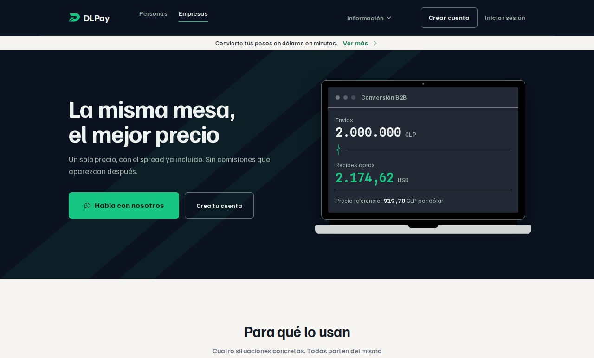
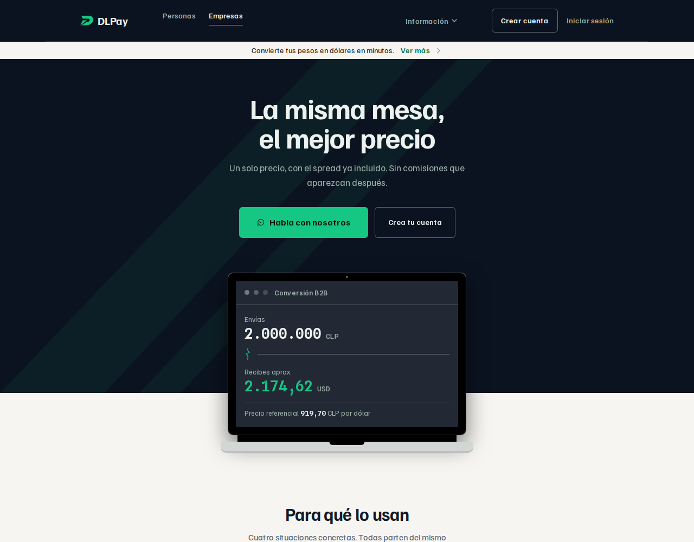
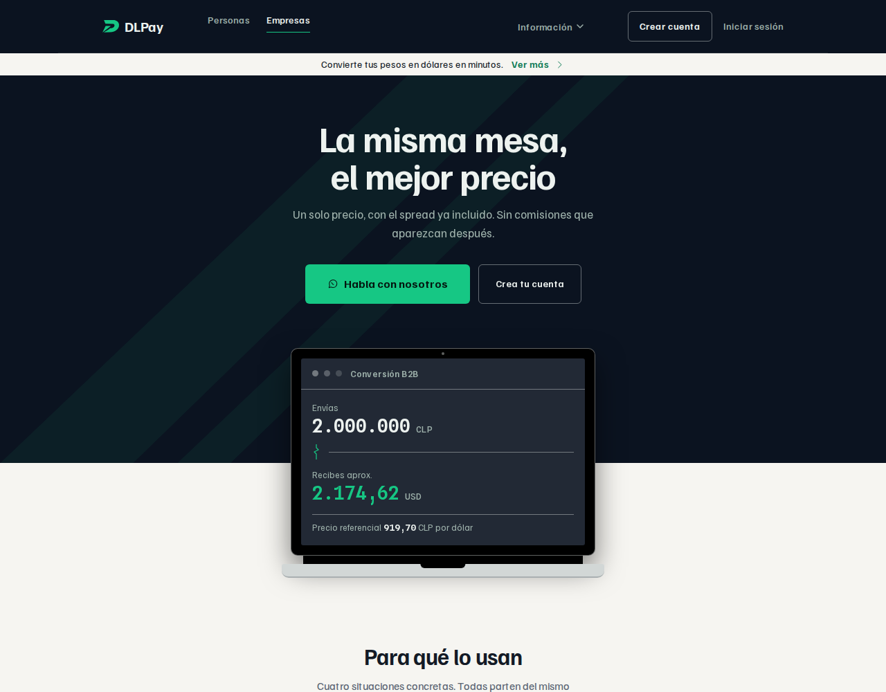
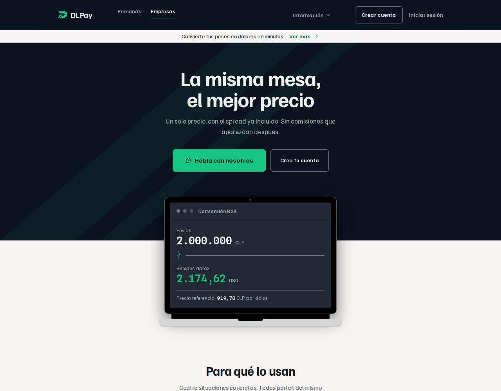
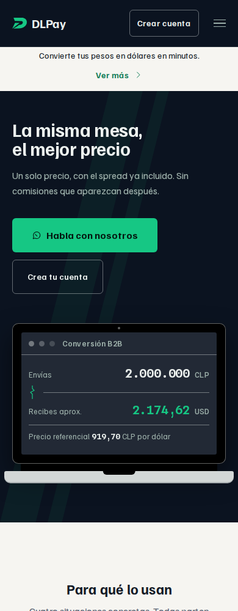
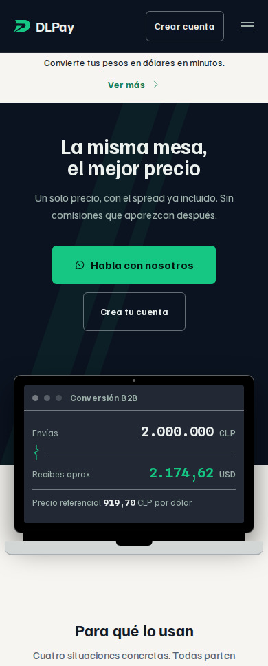

cowork · 2026-09-16 · encabezado de /empresas
Tres proporciones del montaje, para elegir mirando. Lo que cambia entre ellas es cuánta parte del portátil queda sobre la superficie clara; todo lo demás es idéntico.
Las imágenes no son una maqueta: son la página construida
(dist/empresas/) con el cambio aplicado encima, así que traen la cabecera, el
portátil y la sección de casos reales. Es lo que pide la regla de evidencia del README §4:
un montaje que depende del fondo que hay detrás no se puede juzgar en una vista aislada.
Texto a la izquierda, portátil a la derecha, ambos dentro de la banda. La sección que sigue —«Para qué lo usan»— ya viene centrada, así que hoy el encabezado es la única pieza de la página que no lo está.

El más conservador. La costura cae cerca de la bisagra, así que la pantalla queda entera en la tinta y sobre el papel asoma casi sólo el chasis plateado. Se lee más como «la banda termina donde empieza el portátil» que como un objeto que cruza.

La costura cruza el objeto por el medio y cae en el hueco entre dos filas de la pantalla, no sobre una cifra. Es la proporción que hace legible el gesto —el portátil rompe el plano— sin encoger la banda hasta que pierda peso. Es además la que pediste al describirlo. Elegida el 2026-09-16.

El más marcado. La pantalla completa queda sobre el papel y el objeto gana presencia, pero la banda pierde 110 px y con ellos peso: la tinta pasa de ser el fondo del encabezado a ser una franja detrás del titular. La costura además cae justo bajo la primera cifra.

En móvil la página ya apilaba, así que lo que cambia es el centrado y el montaje. Cero desborde horizontal medido a 360, 390 y 430.

